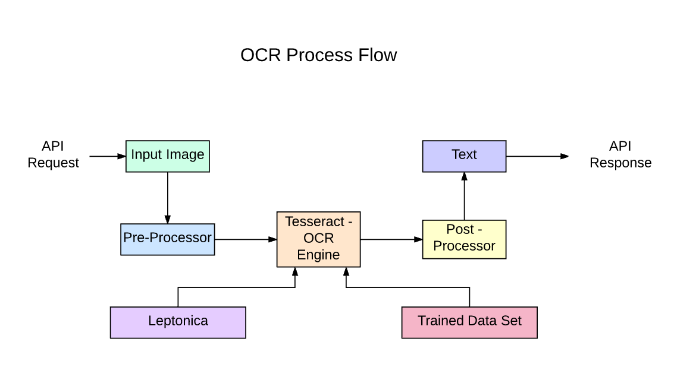

Building OCR for Old & Modern Tamil Letters
Shrinivasan T
Created: 2020-08-09 Sun 12:50
T Shrinivasan
tshrinivasan@gmail.com
Kaniyam Foundation
OCR -> Optical Character Recognition
Get text from Images

OCR Workflow

Extract Data
Available OCR
- Abby ( Proprietary )
- Google OCR (Proprietary)
- Tesseract (Free/Open Source Software)
Tesseract
It is free software, released under the Apache License.
Originally developed by HP at 1980s.
It was released as open source in 2005
Development has been sponsored by Google since 2006.
Features
Command line
Input is Image only
tesseract myimage.png myimage.txt -l eng+tam+mal
Supported languages
106 languages
afr (Afrikaans), amh (Amharic), ara (Arabic), asm (Assamese), aze (Azerbaijani), aze_cyrl (Azerbaijani - Cyrilic), bel (Belarusian), ben (Bengali), bod (Tibetan), bos (Bosnian), bre (Breton), bul (Bulgarian), cat (Catalan; Valencian), ceb (Cebuano), ces (Czech), chi_sim (Chinese simplified), chi_tra (Chinese traditional), chr (Cherokee), cym (Welsh), dan (Danish), deu (German), dzo (Dzongkha), ell (Greek, Modern, 1453-), eng (English), enm (English, Middle, 1100-1500), epo (Esperanto), equ (Math / equation detection module), est (Estonian), eus (Basque), fas (Persian), fin (Finnish), fra (French), frk (Frankish), frm (French, Middle, ca.1400-1600), gle (Irish), glg (Galician), grc (Greek, Ancient, to 1453), guj (Gujarati), hat (Haitian; Haitian Creole), heb (Hebrew), hin (Hindi), hrv (Croatian), hun (Hungarian), iku (Inuktitut), ind (Indonesian), isl (Icelandic), ita (Italian), ita_old (Italian - Old), jav (Javanese), jpn (Japanese), kan (Kannada), kat (Georgian), kat_old (Georgian - Old), kaz (Kazakh), khm (Central Khmer), kir (Kirghiz; Kyrgyz), kmr (Kurdish Kurmanji), kor (Korean), kor_vert (Korean vertical), kur (Kurdish), lao (Lao), lat (Latin), lav (Latvian), lit (Lithuanian), ltz (Luxembourgish), mal (Malayalam), mar (Marathi), mkd (Macedonian), mlt (Maltese), mon (Mongolian), mri (Maori), msa (Malay), mya (Burmese), nep (Nepali), nld (Dutch; Flemish), nor (Norwegian), oci (Occitan post 1500), ori (Oriya), osd (Orientation and script detection module), pan (Panjabi; Punjabi), pol (Polish), por (Portuguese), pus (Pushto; Pashto), que (Quechua), ron (Romanian; Moldavian; Moldovan), rus (Russian), san (Sanskrit), sin (Sinhala; Sinhalese), slk (Slovak), slv (Slovenian), snd (Sindhi), spa (Spanish; Castilian), spa_old (Spanish; Castilian - Old), sqi (Albanian), srp (Serbian), srp_latn (Serbian - Latin), sun (Sundanese), swa (Swahili), swe (Swedish), syr (Syriac), tam (Tamil), tat (Tatar), tel (Telugu), tgk (Tajik), tgl (Tagalog), tha (Thai), tir (Tigrinya), ton (Tonga), tur (Turkish), uig (Uighur; Uyghur), ukr (Ukrainian), urd (Urdu), uzb (Uzbek), uzb_cyrl (Uzbek - Cyrilic), vie (Vietnamese), yid (Yiddish), yor (Yoruba)
GUI for tesseract
https://github.com/Parathantl/tesseract_gui/releases
GUI for tesseract
GUI for tesseract
GUI for tesseract
GUI for tesseract - Links
https://github.com/Parathantl/tesseract_gui/releases
How to install ? - https://www.youtube.com/watch?v=NSZmOYuEaOw
How to use ? - https://www.youtube.com/watch?v=awnGGLyYqec
Possibilities
Handwritten Text
Palm leaves
Estampages
Modern / Old Books
Estampages
Palm leaves
Hand Written Text
Books

Training
Using Ground Truth Files
Using TTF Font file
Training Using Ground Truth Files
https://github.com/Shreeshrii/tess4training
https://github.com/tesseract-ocr/tesstrain
https://medium.com/@guiem/how-to-train-tesseract-4-ebe5881ff3b7
Ground Truth Files
Line by Line text for any image
ஸ்வஸ்திஸ்ரீதிருமகளபோலபபெருநிலசசெலவியுந
தனககேயுரிமைபூணடமைமனககொளககாந
Training using Font File
Issues
Automatic Image cleaning is tough
Lack of experts to read old text
Lack of images as open data
What we need?
Huge ground truth files for all
Create Tons of Fonts with different styles
Experts to verify
More Contributors
Skill on image processing
Skill on Tesseract training
What we need ?
More open data
All the Universities to release their research works in open license
All the Govt sponsored works in open license